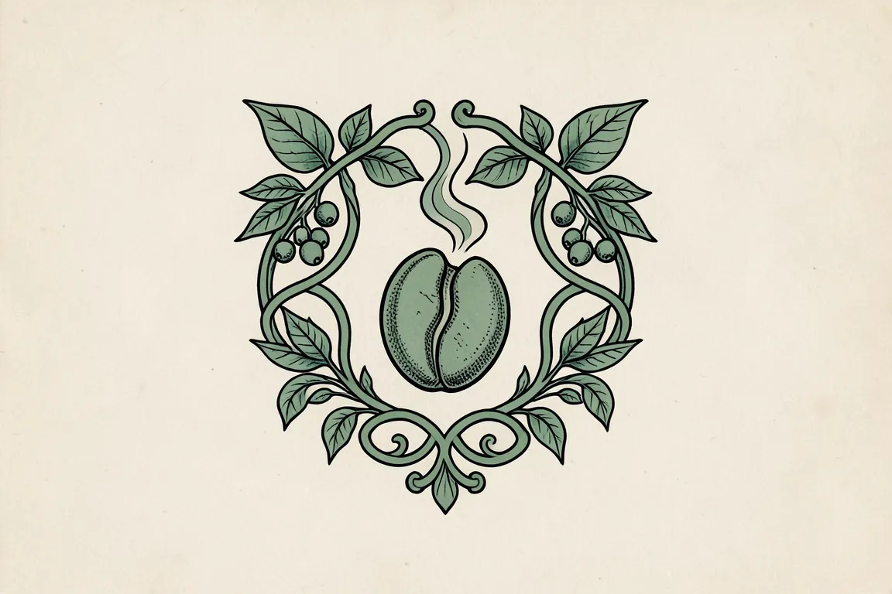

logoer · 1890–1914 · også: Jugendstil-monogram, Nieuwe Kunst-vignett, Sesesjons-monogram
Sammenflettede initialer og bokstaver tegnet som ett ornament, inne i en ramme av piskesnertkurver og planteformer. Forlag, foreninger og verksteder brukte det som vignett på bøker, tidsskrifter og trykksaker.

Kjerneidé
Bokstavene og ornamentet er én tegning: merket vokser som en plante fra én linje, og kunstnerens hånd synes i hver kurve.
Designprinsipper
Flett 1–3 initialer slik at strekene deler minst én stamme eller én buk.
Tegn hver kurve som en piskesnert: en S-kurve der radien endrer seg med en faktor på 3 eller mer langs streken.
Lukk merket i en ramme av planteranker, med rammelinje 1,5–2 ganger så tykk som bokstavstreken.
Tegn egne versaler med lav x-høyde, høye tverrstreker og åpne, runde former; ingen skrift fra et skriftforlag.
Hold strekkontrasten lav, 1,5:1 til 3:1, slik at merket trykkes i én farge som en blokk.
Tilpass merket til et stående rektangel nær 3:4 eller et kvadrat, sentrert på en loddrett akse.
Antimønstre
Rettlinjede geometriske bokstaver fra en skrifttype
Skravur og tonal skygge
Mer enn 2 trykkfarger
Stive sirkler og kvadrater som eneste ramme
Bokstaver som flyter fra hverandre uten felles strek